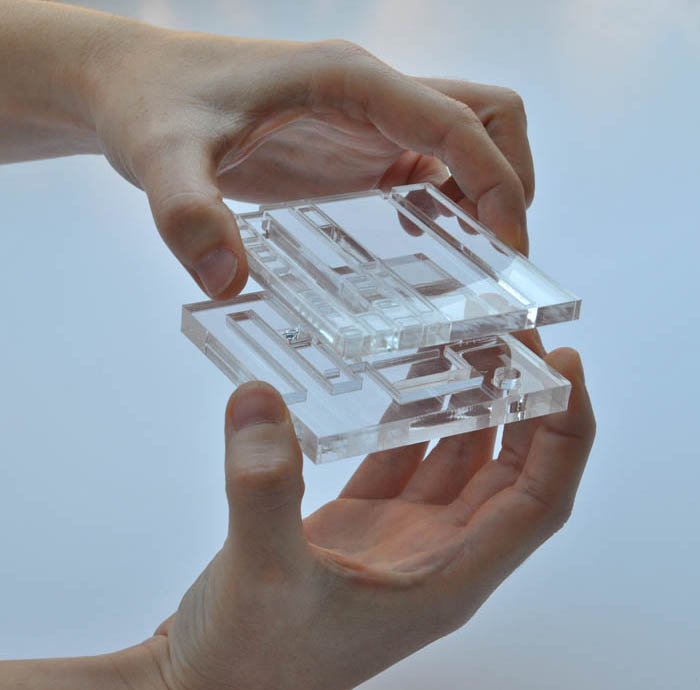

Guggenheim Helsinki
FORA + André Adónis
Competition - Museum - Helsinki - 2014
Guggenheim Helsinki will feature as a machine for the production of exhibitions and performances: the museum is a stage with a void as its heart.
Museum
Museums were once places where visitors gathered to appreciate art collections. The Guggenheim NY established a new paradigm: since it opened, it became impossible to dissociate the building and its function from the city. Gehry’s astonishing take took the stage in the 90’s, and firmed a standard for the spectacle museum.
Nowadays, new possibilities arise for the museum’s role in the civic realm. Amidst expanding individualized digital networks, museum space became increasingly a meeting place, one of the last realms of public life in the city, and an open stage for its inhabitants to occupy.
Can the building perform to adapt to ever shifting conditions?
Can it offer back to the city a site where the experience of art becomes one with its surrounding?
Production and performance
The increasing complexity of the museum’s logistics poses a great challenge to a building that wishes to remain public. A large production apparatus, responsible for organizing and creating exhibitions, performances and art events, remains in the backstage.
Can the museum reveal this hidden realm, and reconcile production and performance as an integrated experience?
The new Guggenheim is assembled in a square of 75x75 meters, resting at the southern edge of the site, in direct relation with the park. The northern plaza welcomes visitors arriving from the city centre, and leads directly to the middle level, the civic stage.

This voided floor is an unobstructed platform that can mutate in order to accommodate a range of events from exhibitions to concerts or performances, offering outstanding views over the harbour.
Floating above, technical areas, curatorial offices and exhibition galleries are organized between the trusses that span 75 meters. The main gallery has a retractable floor that allows for large scale installations to take place in the civic stage.
Team:
Architecture: João Moura Fagulha,
Raquel Maria Oliveira, João Prates Ruivo, André Adónis
Sustainability consultant: i+i consulting - Isabel Silvestre, Ignacio Medina.
Client: The Guggenheim Foundation